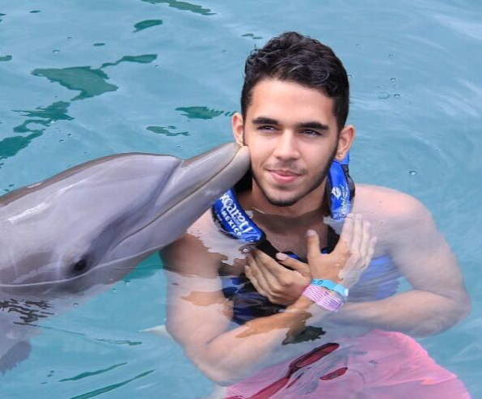

About Me

My name is Arturo Matson, I'm a game programming student and this website will be used as a portfolio. I'm 22 years old and I'm from Colombia.
I moved to canada 4 months ago to follow my dreams. I've been playing videogames my whole life and I think it's my favorite hobby. When i was
younger I didn't think about the possibility of studying to become someone that creates games instead of someone that only plays them as it is
imposible in my country to make a career of it. I spent a lot of time thinking about what it was that I'd love to do as an adult and it was hard
at the beggining but as I graduated from Highschool I had the opportunity to go to med school. I spent almost 6 semesters in med school before
dropping out. At first I liked it and found it very interesting but as time passed, I felt that something within me was dying. It was very hard
keeping up with that lifestyle and after seeing so much pain and death you start to see life differently. I felt that i had to do what I really
wanted to do, even if it meant leaving my country.
My favorite videogame series are the Drakengard/Nier series created by Yokotaro.
The stories in this universe are some of the best pieces of media that I have ever experienced and I could even say that it is the peak of what art is.


Best opening sequence for a game
"They are perpetually trapped in a never-ending spiral of life and death. However...life is all about the struggle within this cycle. That is what "we" believe."
My favorite videogames
- Drakengard/Nier Series
- Final Fantasy XIV
- Persona 5
My Hobbies
- Playing videogames
- Exercising
- Driving
- Sleeping
| List of my favourite game series | ||
|---|---|---|
| Drakengard/Nier series | Final Fantasy's | Dark Souls trilogy |
| Yakuza series | Tekken series | Guilty Gear series |